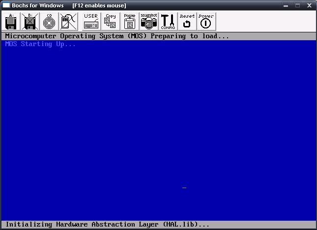

Errors, Exceptions, Interruptions
Please note: This tutorial covers software interrupt handling, not hardware interrupt handling. If you are looking for hardware interrupts, please see our 8259A PIC tutorial. The software side of handling hardware interrupts is discussed here.
This tutorial will cover a very important concept: Error Handling. Error Handling involves a lot more then simply handling problems, but catching them as well. This is where Exception Handling comes in. Because Exception Handling requires interrupts, we will also cover interrupt handling as well.
Interrupts are architecture dependent. Because of this, we will be developing an interface for managing interrupts through our uber 1337, yet very empty (at the moment) Hardware Abstraction Layer, and interfacing with our Kernel to install our own Trap Gates which will be used to catch processor exception errors, and allow us to prevent triple faults now, and forever, while remaining completely hardware independent.
Sound fun? So, here's what's up:
- Error Handling
- Exception Handling
- IRs, IRQs, ISRs
- Gates: Traps, Interrupts, Tasks
- IDTs and IVTs
- IDTR processor register
- LIDT and SIDT instructions
- FLIHs and SLIHs
- How interrupts work, stack, error codes
- Developing a kernel panic error screen. i.e., BSoD
...A lot of stuff going on here, so lets get started, shall we?
Errors, Errors, Errors
Okay, lets face it: No one is perfect. With computers, this is even truer. As we are working in the wonderful world of kernel land, things are even worse as a simple error can cause unpredictable software to hardware problems.
I am sure a lot of our readers have already experienced this through Triple Faults. In applications programming, we are not working directly with the hardware. Because of this, there are less problems that can result to errors. In kernel land, things are a bit different. Triple faults are caused do to errors with our instructions or data. If there is a problem that the processor cannot resolve, it reboots the system before it gets worse.
Triple faults and no error handling is very bad in OS development, as the problems can get much worse, rom data corruption to hardware failures, to even completely destroying the system. Knowing the importance of error handling is critical in resolving these, and insuring that our system stays stable to its end release.
Exception Handling
exception Handling comes in two flavors: A programming language construct (For example, standard C++? try/catch/throw keywords. Some compilers also include additional keywords like _except; or mechanisms like SEH, or VEH). The other flavor is the one we are interested in: Hardware mechanisms that are designed to change (interrupt) the current flow of execution. The condition that changes this flow of execution is called an exception. Exceptions should only be used to signal error (exceptional) conditions, and not for conditionals that are used for normal operation.
When an exception occurs, the flow of execution changes as a subroutine (the exception handler) is executed. This allows the subroutine to handle the error condition in some way. Normally, the current state will be saved before the handler is called. This will allow the handler to continue execution later, if possible.
Remember that exceptions are designed from the hardware. i.e., They are hardware mechanisms. This is similar to hardware interrupts, and the bases of interrupt handling, as they are related.
Because of this, in order to understand exception handling from the hardware, we need to look at interrupts. Lets look at that next.
Interrupt Handling
Interrupts
An Interrupt is an external asynchronous signal requiring a need for attention by software or hardware. It allows a way of interrupting the current task so that we can execute something more important.
Not to hard. Interrupts provide a way to help trap problems, such as divide by zeros. If the processor finds a problem with the currently executing code, it provides the processor alternative code to execute to fix that problem.
Other interrupts may be used to provide a way to service software as routines. These interrupts can be called by any software from within the system. This is used a lot for System API's, which provide a way for ring 3 applications to execute ring 0 level routines.
Interrupts provide a lot of use, especially as a way of receiving information from hardware that may change its state at asynchronous times.
Interrupt Types
There are two types of interrupts: Hardware Interrupts and Software Interrupts. In the 8259A PIC tutorial, we have covered hardware interrupts. This tutorial focuses on software interrupts.
Hardware Interrupts
A hardware interrupt is an interrupt triggered by a hardware device. Normally, these are hardware devices that require attention. The hardware Interrupt handler will be required to service this hardware request.
This tutorial does not cover hardware interrupt handling, as that is hardware specific. For the x86 architecture, hardware interrupts are handled by programming the 8259A Programmable Interrupt Controller (PIC). Please see our 8259A PIC tutorial for more information on hardware interrupt handling.
Spurious Interrupt: This is a hardware interrupt generated by electrical interference in the interrupt line, or faulty hardware. We do NOT want this!
Software Interrupts
This is where the fun stuff is at!
Software Interrupts are interrupts implemented and triggered in software. Normally, the processor's instruction set will provide an instruction to service software interrupts. For the x86 architectures, these are normally INT imm, and INT 3. It also uses IRET and IRETD instructions.
INT imm and INT 3 instructions are used to generate an interrupt, while the IRET class of instructions are used to return from Interrupt Routines (IRs).
For example, here we generate an interrupt through a software instruction:
int 3 ; generates software interrupt 3
These instructions may be used to generate software interrupts and execute Interrupt Routines (IR)'s through software.
As you know, software interrupts were available in real mode. However, as soon as we made the jump to protected mode, the Interrupt Vector Table (IVT) became invalid. Because of this, we cannot use interrupts. Instead, we have to make our own.
We will cover software interrupt handling in this tutorial.
Interrupt Routines (IRs)
An Interrupt Routine (IR) is a special function used to handle an Interrupt Request (IRQ).
When the processor executes an interrupt instruction, such as INT, it executes the Interrupt Routine (IR) at that location within the Interrupt Vector Table (IVT).
This means, it simply executes a routine that we define. Not to hard, huh? This special routine determines the Interrupt Function to execute normally based off of the value in the AX register. This allows us to define multiple functions in an interrupt call. Such as, the DOS INT 21h function 0x4c00.
Remember: Executing an interrupt simply executes an interrupt routine that you created. For example, the instruction INT 2 will execute the IR at index 2 in the IVT. Cool?
IRs are commonly also referred to as Interrupt Requests (IRQs). However, the naming convention of IRs are still used within the ISA bus, so understanding both names is important.
Interrupt Requests (IRQs)
An Interrupt Request (IRQ) refers to the act of interrupting an event by signaling the system either through the Control Bus IR line or through one of the 8259A Programmable Interrupt Controller (PIC) IR lines.
For systems with a single 8259 PIC, there are 8 IRQ lines, labeled IR0 IR7. For systems with 2 8259 PICs, there are 16 possible IRQ? labeled IR0 IR15. On the system ISA bus, These lines are labeled as IRQ0 IRQ15.
Newer intel based systems integrate an Advanced Programmable Interrupt Controller (APIC) device that allows 255 IRQs per controller.
For more information about IRQs, please see either the 8259A PIC tutorial or the APIC tutorial.
What this means is that the 8259A PIC can signal the processor to generate a software interrupt call through a hardware device by activating the processors IR line, and the processor to execute the correct interrupt handler. This allows us to handle hardware device requests through software. Please see the 8259A PIC tutorial for more information on this...It is very important to understand this.
Interrupt Service Routines (ISRs)
Interrupt Service Routines (ISRs) is an Interrupt Handler. These are important to understand, so lets look closer.
Interrupt Handlers
An interrupt handler is an IR for handling interrupts and IRQs. In other words, they are callback methods that we define for handling both hardware and software interrupts.
There are two types of ISRs: FLIH, and SLIH.
First Level Interrupt Handler (FLIH): A FLIH is considered to be part of the lower half of a device driver or kernel. These interrupt handlers are platform specific, and usually service hardware requests, executing similar to Interrupt Routines (IRs) and Interrupt Requests (IRQs). They have short execution time. Their primary duty is to service the interrupt, or to record platform specific information which is only available at the time of the interrupt (As it is running in a lower level.) It may also schedule or execute a SLIH, if needed.
Second Level Interrupt Handler (SLIH): These interrupt handlers are longer lived then FLIHs. In this way, it is similar to a task or process. SLIHs are normally executed and managed by a kernel program, or by FLIHs.
Nested Interrupt Handlers: When an interrupt handler is executed and the Interrupt Flag (IF) is set, interrupts can still be executed during the current interrupt. This is known as a nested interrupt.
Interrupts in Real Mode
Interrupts in Real Mode are handled through the Interrupt Vector Table (IVT). The Interrupt Vector Table (IVT) is a list of Interrupt Vectors. There are 256 Interrupts in the IVT.
IVT Map
The IVT is located in the first 1024 bytes of physical memory, from addresses 0x0 through 0x3FF. Each entry inside of the IVT is 4 bytes, in the following format:
- Byte 0: Offset Low Address of the Interrupt Routine (IR)
- Byte 1: Offset High Address of the IR
- Byte 2: Segment Low Address of the IR
- Byte 3: Segment High Address of the IR
Notice that each entry in the IVT simply contains the address of the IR to call. This allows us to create a simple function anywhere in memory (Our IR). As long as the IVT contains the addresses of our functions, everything will work fine.
Okay, Lets take a look at the IVT. The first few interrupts are reserved, and stay the same.
x86 Interrupt Vector Table (IVT)
| Base Address | Interrupt Number | Description |
|---|---|---|
| 0x000 | 0 | Divide by 0 |
| 0x004 | 1 | Single step (Debugger) |
| 0x008 | 2 | Non Maskable Interrupt (NMI) Pin |
| 0x00C | 3 | Breakpoint (Debugger) |
| 0x010 | 4 | Overflow |
| 0x014 | 5 | Bounds check |
| 0x018 | 6 | Undefined Operation Code (OPCode) instruction |
| 0x01C | 7 | No coprocessor |
| 0x020 | 8 | Double Fault |
| 0x024 | 9 | Coprocessor Segment Overrun |
| 0x028 | 10 | Invalid Task State Segment (TSS) |
| 0x02C | 11 | Segment Not Present |
| 0x030 | 12 | Stack Segment Overrun |
| 0x034 | 13 | General Protection Fault (GPF) |
| 0x038 | 14 | Page Fault |
| 0x03C | 15 | Unassigned |
| 0x040 | 16 | Coprocessor error |
| 0x044 | 17 | Alignment Check (486+ Only) |
| 0x048 | 18 | Machine Check (Pentium/586+ Only) |
| 0x05C | 19-31 | Reserved exceptions |
| 0x068 - 0x3FF | 32-255 | Interrupts free for software use |
Not to hard. Each of these interrupts are located at a base address within the IVT.
Interrupts in Protected Mode
As we are developing a protected mode operating system. This will be important to us. As you know, we cannot access the IVT in protected mode do to a lot of reasons. Because of this, we cannot access or use any more interrupts. So, instead, we need to create our own.
...And it all starts with the Interrupt Descriptor Table.
Interrupt Descriptor Table (IDT)
The Interrupt Descriptor Table (IDT) is a special table used by the processor for the management of IRs. Its use depends on the mode of the processor. The IDT itself is an array of 256 descriptors, similar to the LDT and GDT.
Real Mode
In Real Mode, The IDT is also known as the IVT. Please see the description of the IVT in the above sections for more information.
Protected Mode
The way the IDT works in protected mode is very different then that of Real Mode (This is one of the many reasons why we cannot use the IVT in protected mode.) The IVT is still used, however.
The IDT is an array of 256 8 byte descriptors stored consecutively in memory and indexed by an interrupt vector within the IVT. We will take a look at these descriptors, descriptor types, and the details of the IDT next.
Interrupt Descriptor: Structure
A descriptor for an IDT takes the following formats. Some of the format changes depending on what type of descriptor this is.
- Bits 0...15:
- Interrupt / Trap Gate: Offset address Bits 0-15 of IR
- Task Gate:
- Bits 16...31:
- Interrupt / Trap Gate: Segment Selector (Usually 0x10)
- Task Gate: TSS Selector
- Bits 31...35: Not used
- Bits 36...38:
- Interrupt / Trap Gate: Reserved. Must be 0.
- Task Gate: Not used.
- Bits 39...41:
- Interrupt Gate: Of the format 0D110, where D determines size
- 01110 - 32 bit descriptor
- 00110 - 16 bit descriptor
- Task Gate: Must be 00101
- Trap Gate: Of the format 0D111, where D determines size
- 01111 - 32 bit descriptor
- 00111 - 16 bit descriptor
- Interrupt Gate: Of the format 0D110, where D determines size
- Bits 42...44: Descriptor Privelige Level (DPL)
- 00: Ring 0
- 01: Ring 1
- 10: Ring 2
- 11: Ring 3
- Bit 45: Segment is present (1: Present, 0:Not present)
- Bits 46...62:
- Interrupt / Trap Gate: Bits 16...31 of IR address
- Task Gate: Not used
That's it!? Yep--That's all there is to it 😉
All we need to do is fill in our IDT, and install it, just like what we done with the GDT. The IDT is a lot more simpler then the IDT, so its even easier 😀 The above list is the complete descriptor format. We only need to worry about developing an interrupt gate for now, so we will only focus on that.
Interrupt Descriptor: Example
Just like with the GDT, we will create an example at the bit level to help describe exactly how everything works.
First, lets look at an example interrupt descriptor. This is going to be in shown in assembly so we can get a better view of everything.
idt_descriptor:
.m_baseLow dw 0
.m_selector dw 0x8
.m_reserved db 0
.m_flags db 010001110b
.m_baseHi dw 0
Yep--That's all there is to a descriptor. That's not that hard, is it?
Lets see how this relates to our table above by breaking it down and seeing each bit:
00000000 00000000 00000000 00001000 00000000 10001110 00000000 00000000
This is our descriptor, but in binary form. For the most part this is easy as most of it is all 0's.
The first two bytes is our m_baseLow member shown in the above code. Looking at the table above, we can see that this is the first 16 bits of the descriptor. Because this is an interrupt gate, this represents bits 0-15 of the base address of the IR. This means, if this was our field, our IR would be located at address 0. (This normally would NOT be the case, as the location of the IR varies. This works for this example, though.)
The next 2 bytes is our m_selector field. This is bytes 16-31 of the descriptor. Looking at our table, we can see that this represents our segment selector. Our interrupt handler contains code, so it should be using one of our code selectors. This is defined at offset 0x8 within the GDT, so that is our segment selector.
The next few bits are not used. We can see that bits 31-35 are not used, while bits 36-38 must be 0 for interrupt gates. Because of this, we can safely say bits 31-38 are 0. This is the size of a byte, which is our m_reserved member.
The next byte is where the interesting stuff happens. Lets break it down, bit by bit--literally:
10001110
Okay...Right now we are at bit 39. Looking at our table above, we can see bits 39-41 must be 0D110. If the D bit is set, this is a 32bit descriptor. It is equal to 01110, so it is indeed a 32bit descriptor.
The next two bits (00 above) are bytes 42-45 of the descriptor, which represents the privelige level (DPL). It is 00, so the DPL is to execute at ring 0.
The final two bytes within our example are the last two bytes within the above table. This is the high 16 bits of the IR base address (Which, in our case, is 0.) This is the m_baseHi member displayed above.
As you can see, there really is not that much going on here. The selector is always going to be that of the code selector within the GDT (0x8 for our needs); then all we need to do is set the flag bits and the IR base address within m_baseLow and m_baseHi. We will see a complete example a little later which will help in understanding everything.
IDTR Processor Register
The IDTR register is the processor register that stores the base address of the IDT.
The IDTR register has the following format:
IDTR Register
Bits 16...46 (IDT Base Address)
Bits 0...15 (IDT Limit)
Simple enough, huh? Notice that the base address of our created IDT is stored in this register. The processor uses this register to determine where our IDT is located at.
Knowing this format is very important, as it contains both the limit and base address. Because of this, simply giving it the base address of our idt will NOT work. This is usually resolved by creating a new structure in the format shown above like this:
idt_ptr:
.limit dw idt_end - idt_start ; bits 0...15 is size of idt
.base dd idt_start ; base of idt
; load register with idt_ptr
Oh, wait...How do we even access this register? Oh right...
LIDT Instruction - Loading our IDT
This instruction is used to store a new address of an IDT into the IDTR register. This instruction can only be used if the Current Protection Level (CPL) is 0 (Ring 0). It is very easy to use:
lidt [idt_ptr]
Thats all there is to it. As long as idt_base is the base address of the IDT, this will copy the address into IDTR.
SIDT Instruction - Storing our IDT
This instruction is used to store the value in IDTR into a 6 byte memory location. This instruction may be used in both ring 0 and ring 3 applications.
sidt [idt_ptr]
How Interrupts Work: Detail
Finding the interrupt procedure to call
When an interrupt or exception is fired, the processor uses the exception or interrupt number as an index into the IDT. As you know, our IDT is nothing more then an array of 256 descriptors of the format shown above. The processor performs the calculation IDTR.baseAddress + index * 8, where 8 is the size of a descriptor (Remember that descriptors are 8 bytes in size?), and index is the interrupt number. IDTR.baseAddress is the base address of the IDT stored within the upper bits of IDTR. This allows the processor to retrieve the base address of the descriptor index for the interrupt handler. If the value of the calculation is greater then the IDT limit size (stored in IDTR.limit), the processor will execute a General Protection Fault (GPF) as this will result into a call beyond the size of the IDT.
Remember that the descriptor is either an interrupt, trap, or task gate. If the index points to an interrupt or trap gate, the processor calls the exception or interrupt handler. This is done similar to CALLing a call gate. If the index points to a task gate, the processor executes a task switch to the exception or interrupt handler task similar to a CALL to a task gate.
The information and addresses for the handler are stored within this descriptor. When the processor performs the switch:
Executing the handler
- If the handler is going to be executed at a lower privilege level (bits 42-45 of descriptor), a stack switch occurs.
- The segment selector and stack pointer for the stack to be used by the handler are obtained from the TSS for the currently executing task. The processor pushes the stack segment selector and stack pointer of the interrupt handler on this new stack.
- The processor saves the current state of EFLAGS,CS, and EIP on the new stack
- If an exception causes an error code to be saved, the error code is pushed on the new stack after EIP
- If the handler is going to be executed at the same privilege level (current privilege level (cpl) is the same as (bits 42-45 of descriptor))
- The processor saves the current state of EFLAGS, CS, EIP on the current stack.
- If an exception causes an error code to be saved, the error code is pushed on the current stack after EIP
It is very important to know how the stack is pushed when our interrupt handler is called, and what exceptions also push error codes. We will look at this next.
Inside of our interrupt handler
Because the location of our interrupt handler is stored within the descriptor, the processor is now able to execute our handler.
As you know, when the processor executes our handler, it pushes some extra information on the stack. If our handler is running in the same ring level as ours (As it will be), then we must remember that the processor will push EFLAGS, CS, EIP and an Error code on our current stack. This allows us to continue execution if we are able to.
Putting all of this together, when our handler is called, our stack will be set up like this:
+---------------+ -- Bottom of stack
| EFLAGS |
+---------------+
| Return CS |
+---------------+
| Return EIP |
+---------------+
| Error Code |
+---------------+ -- ESP points here when handler is executed.
If there is no error code, ESP points to return EIP
We use this information to return back from our handler, and to determine what caused the exception (If there is an error code.)
Inside of our interrupt handler: Error code format
If an error code is pushed on the stack when our handler is called, we can use its information to help in determining the error.
It has the following format:
- Bit 0: External event
- 0: Internal or software event triggered the error.
- 1: External or hardware event triggered the error.
- Bit 1: Description location
- 0: Index portion of error code refers to descriptor in GDT or current LDT.
- 1: Index portion of error code refers to gate descriptor in IDT.
- Bit 2: GDT/LDT. Only use if the descriptor location is 0.
- 0: This indicates the index portion of the error code refers to a descriptor in the current GDT.
- 1: This indicates the index portion of the error code refers to a segment or gate descriptor in the LDT.
- Bits 3-15: Segment selector index. This is an index into the IDT, GDT, or current LDT to the segment or gate selector bring referenced by the error code.
- Bits 16-31: Reserved
Error codes are not pushed on the stack for exceptions that are generated externally (via the INTR,LINT0,LINT1 pins), or INT n instruction.
The error code format is different for page fault exception errors. We will look at that in the next section.
Returning from a handler
All handlers must use either IRET or IRETD instructions to return. IRET is similar to RET except that it restores the saved EFLAGS (that was pushed on the stack when the handler was getting executed), and the IOPL field in EFLAGS is only set to 0 if the current protection level (CPL) is 0. The IF flag is also changed only if the CPL is less then or equal to the IOPL.
If a stack switch occurred when executing the handler, IRET switches back to the interrupted procedures stack as well.
x86 Exceptions
Exceptions: Listing
All of the exceptions are defined as the first few interrupts within the IVT or IDT. Here is the complete list of generated exceptions from the x86 class of processors.
- Fault - the return address (Return CS:EIP that was pushed on stack when handler was called. See Inside of our interrupt handler for more information.) points to the instruction that caused the exception. The exception handler may fix the problem and then restart the program, making it look like nothing has happened.
- Trap - the return address points to the instruction after the one that has just completed.
- Abort - the return address is not always reliably supplied. A program which causes an abort is never meant to be continued.
x86 Processor Exceptions
| Interrupt Number | Class | Description Error Code | |
|---|---|---|---|
| 0 | Fault | Divide by 0 | None |
| 1 | Trap or Fault | Single step (Debugger) | None. Can be retrieved from debug registers |
| 2 | Unclassed | Non Maskable Interrupt (NMI) Pin | Not applicable |
| 3 | Trap | Breakpoint (Debugger) | None |
| 4 | Trap | Overflow | None |
| 5 | Fault | Bounds check | None |
| 6 | Fault | Invalid OPCode | None |
| 7 | Fault | Device not available | None |
| 8 | Abort | Double Fault | Always 0 |
| 9 | Abort (Reserved, do not use) | Coprocessor Segment Overrun | None |
| 10 | Fault | Invalid Task State Segment (TSS) | See error code below |
| 11 | Fault | Segment Not Present | See error code below |
| 12 | Fault | Stack Fault Exception | See error code below |
| 13 | Fault | General Protection Fault (GPF) | See error code below |
| 14 | Fault | Page Fault | See error code below |
| 15 | - | Unassigned | - |
| 16 | Fault | x87 FPU Error | None. x87 FPU provides own error information |
| 17 | Fault | Alignment Check (486+ Only) | Always 0 |
| 18 | Abort | Machine Check (Pentium/586+ Only) | None. Error information obtained from MSRs |
| 19 | Fault | SIMD FPU Exception None | |
| 20-31 | - | Reserved | - |
| 32-255 | - | Available for software use | Not applicable |
IRQ 0 and the System Timer
As you know, if we enter protected mode all interrupts must be disabled. If we have not done this, our system will triple fault immediately on the next clock tick. Why is this?
The System Timer, usually a form of the 8253 Programmable Interval Timer (PIT) uses IRQ 0 to let us know when a clock tick happens. This device is configured this way by the system BIOS.
But WAIT! looks at above table, Isn't that the Divide by 0 error? Bingo.
Because the tables are now invalid because we switched to protected mode, Who knows where this will lead us. Because of this, an immediate triple fault on the next system tick, and the reason we must disable interrupts before switching.
We should also note that the 8253 Programmable Interval Timer (PIT) is a hardware device. Notice how, using the table above, it will fire an exception (IRQ 0)? How will we know its an actual error, or just a simple tick?
Lets take a look closer...
Remapping the 8259A Programmable Interrupt Controller (PIC)
The 8259A PIC is a standard controller used to control hardware interrupts. Hardware microcontrollers signal the PIC on their respective IR line that connects to the PIC. This allows the PIC to "know" a hardware device needs attention, and to signal the processor to fire an interrupt to handle the devices request.
In our above example, the 8253 PIT was signaling the 8259A PIC to handle a system tick in this manner, which caused IRQ 0 (Remember that the 8253 PIT uses IRQ 0) to fire--which caused a triple fault as it was also
- a divide by 0 exception, and
- invalid code as we have not written it yet.
To resolve this problem, we will need to reprogram the 8259A PIC Microcontroller to remap the hardware devices to use different IRQs.
Please keep in mind that we can still use software interrupts if the IF is 0 (interrupts disabled), as IF only applies to hardware interrupts. However, if we want to re-enable hardware interrupts, we must reprogram the PIC.
The 8259A PIC is a fairly complex microcontroller to program. Luckily, most of its modes do not apply to us.
The demo at the end reprograms the PIC and re-enable interrupts. In order to completely get the most out of this tutorial, it is recommended to read our [8259A Programmable Interrupt Controller] (fix link) tutorial.
Demo

 The first screenshot displays the kernel initializing the HAL. The second screenshot displays what happens when an interrupt is fired. Notice how our default handler catches the interrupt.
The first screenshot displays the kernel initializing the HAL. The second screenshot displays what happens when an interrupt is fired. Notice how our default handler catches the interrupt.
This demo is fairly complex, as we have covered a lot of material in this tutorial.
This demo installs a new Global Descriptor Table (GDT) for the kernel to use and an Interrupt Descriptor Table (IDT). It also creates a nice interface that we can use to handle software interrupts. Note that we do NOT cover hardware interrupts yet. In the next tutorial, we will be adding both 8259A PIC and 8253 PIT microcontroller interfaces to the HAL. This will allow us to catch hardware interrupts, enable hardware interrupts, and provide ourselves with a system timer. It will be fun 😀
Lets cover the demo a little more so that we can see everything working.
Hardware Abstraction
This demo includes a lot of extra files that we have not seen until now. Because of this, it is kind of like a code dump, which is what I want to avoid here. A lot of it is very simple and things that we have looked at and even implemented in our bootloader. Some of it Inside idt.h and idt.cpp may be new to you, and covers what we have learned here: The Interrupt Descriptor Table (IDT).
This is also the beginning of our Hardware Abstraction Layer (HAL)!
As you know, I have been stressing hardware abstraction, and the importance of it, sense this series begun. You will see why soon as we continue to build on the Hal. You might even see the pluses of keeping the Hal completely independent of the kernel here!
Without further ado, lets look at the beginnings of the primary interface for the HAL.
Hal - include/hal.h - Platform independent interface for the HAL
This is the interface between the HAL and the kernel. It is part of the standard include directory, and is completely separate from its implementation. All routines are declared extern as the header file is meant to be used by any implementation that defines the routines inside of it. The implementations are architecture specific, but the interface is in no way coupled to any specific implementation, making it completely hardware independent.
While the implementations themselves are architecture specific, we can simply build the implementations for different architectures. Because each implementation uses this common interface, and we can support dynamic loading (like hal.dll), we can either
- link what static hal implementation to use when building for different architectures, or
- Build the different Hals independently, and choose which HAL to use at startup. Because they all use the same interface (Hal.h), we dont need any changes in the kernel to use different implementations (and hence different hardware setups.) Cool?
There are currently only two functions in it. We will add more when we need to:
//! Initialize and shutdown hal
extern int Hal_Initialize ();
extern int Hal_Shutdown ();
I will most likely change the prototypes of these routines to allow startup and shutdown parameters. In any case, these are very generic routines that is meant to provide a way to setup and shutdown the hardware, if needed, for the implementation.
There are a couple of very simple layers of software within the hal for the gdt, idt, and CPU, and hal.cpp. Because all they do is initialize the layer below it (Hal.cpp calls the CPU initialize routine, which calls the gdt and idt initialize methods), I am not going to post it here as it may add more complexity in this tutorial then is required.
Instead, lets focus on the bulk of the hal: The gdt setup code, The idt setup code (This contains the bulk of what we looked at in this tutorial), and the kernel's main() routine. Cool?
We will not cover the GDT in detail. Please see [Tutorial 8] (fix link) for a complete description of it.
Hal - hal/gdt.h - global descriptor table
Descriptor Tables ...again
Yes, the GDT has come back to haunt you!!! ...yes, YOU!!
Anyhow... the GDT is quite a complex structure, huh? As you know, a GDT is an array of descriptors. What was the format of a GDT descriptor again? Right, okay then...
- Bits 56-63: Bits 24-32 of the base address
- Bit 55: Granularity
- 0: None
- 1: Limit gets multiplied by 4K
- Bit 54: Segment type
- 0: 16 bit
- 1: 32 bit
- Bit 53: Reserved-Should be zero
- Bits 52: Reserved for OS use
- Bits 48-51: Bits 16-19 of the segment limit
- Bit 47 Segment is in memory (Used with Virtual Memory)
- Bits 45-46: Descriptor Privilege Level
- 0: (Ring 0) Highest
- 3: (Ring 3) Lowest
- Bit 44: Descriptor Bit
- 0: System Descriptor
- 1: Code or Data Descriptor
- Bits 41-43: Descriptor Type
- Bit 43: Executable segment
- 0: Data Segment
- 1: Code Segment
- Bit 42: Expansion direction (Data segments), conforming (Code Segments)
- Bit 41: Readable and Writable
- 0: Read only (Data Segments); Execute only (Code Segments)
- 1: Read and write (Data Segments); Read and Execute (Code Segments)
- Bit 40: Access bit (Used with Virtual Memory)
- Bits 16-39: Bits 0-23 of the Base Address
- Bits 0-15: Bits 0-15 of the Segment Limit
Building the C structure
We can hide this structure behind a nice C style structure using C's built in types. Knowing that the first 15 bits is the segment limit (Size of an uint16_t), that's data member one. The next 16 bits is bits 0-23 of the base address, and that can be either expressed as 1 uint16_t or 2 uint8_t's. That's data member two and/or three. The next 16 bits (bits 41-56 of GDT) is 16 bits. This is the bulk of the ugly structure that contains flag values, and can be represented, of course, using either 2 uint8_t's or 1 uint16_t. That's the next data member. The last byte is our base address. That's the last data member!
Looking at the above, that ugly structure can be represented in 4 to 5 nice members within a structure. Here is our structure. Try to compare this structure with the above description and table to see where everything fits in. Also, remember that this structure is packed to 1 byte, so it is guaranteed to be 64 bits in size.
#ifdef _MSC_VER
#pragma pack (push, 1)
#endif
//! gdt descriptor. A gdt descriptor defines the properties of a specific
//! memory block and permissions.
struct gdt_descriptor {
//! bits 0-15 of segment limit
uint16_t limit;
//! bits 0-23 of base address
uint16_t baseLo;
uint8_t baseMid;
//! descriptor bit flags. Set using bit masks above
uint16_t flags;
//! bits 24-32 of base address
uint8_t baseHi;
};
#ifdef _MSC_VER
#pragma pack (pop, 1)
#endif
Easy enough! There are a lot of bit flags that can be set to help build the flags bytes within the structure. Please see the header file to see them all, and notice how they work. Basically, we would bitwise OR the bit flags that we want to set. You will see us do this in the next section.
gdtr abstraction
Remember from [tutorial 8] (fix link), we have covered protected mode, the gdt, and gdtr? gdtr Is the processors internal register used to point to the GDT to be used. It is a 48 bit pointer that must follow the following format:
- Bits 0-15: size of entire gdt
- Bits 16-48: base address of gdt
Okay...This one is an easy one to convert to a C struct. Notice how it follows the above format:
#ifdef _MSC_VER
#pragma pack (push, 1)
#endif
//! processor gdtr register points to base of gdt. This helps
//! us set up the pointer
struct gdtr {
//! size of gdt
uint16_t m_limit;
//! base address of gdt
uint32_t m_base;
};
#ifdef _MSC_VER
#pragma pack (pop, 1)
#endif
// Global Descriptor Table (GDT)
static struct gdt_descriptor _gdt [MAX_DESCRIPTORS];
//! gdtr data
static struct gdtr _gdtr;
Here you can also see our new GDT and _gdtr, which will be used for reference when setting up the processors GDTR register.
gdt_install(): Installs a gdt into gdtr
This routine is a very simple one. All it does is use the lgdt instruction to load GDTR with our gdtr pointer. We do not need to do any far jumps here, though, as CS should never change.
//! installs gdtr
static void gdt_install () {
#ifdef _MSC_VER
_asm lgdt [_gdtr]
#endif
}
gdt_set_descriptor(): Sets up a new descriptor in the gdt
This routine is used to install a new descriptor in the GDT. For the most part, it is not too hard; the ugly code is when we get to setting up the flags.
//! Setup a descriptor in the Global Descriptor Table
void gdt_set_descriptor(uint32_t i, uint64_t base, uint64_t limit, uint8_t access, uint8_t grand)
{
if (i MAX_DESCRIPTORS)
return;
//! null out the descriptor
memset ((void*)&_gdt[i], 0, sizeof (gdt_descriptor));
//! set limit and base addresses
_gdt[i].baseLo = base & 0xffff;
_gdt[i].baseMid = (base >16) & 0xff;
_gdt[i].baseHi = (base >24) & 0xff;
_gdt[i].limit = limit & 0xffff;
//! set flags and granularity bytes
_gdt[i].flags = access;
_gdt[i].grand = (limit >16) & 0x0f;
_gdt[i].grand |= grand & 0xf0;
}
i86_gdt_initialize() - initializes the gdt
This brings everything together. All it does is set up our GDTR structure, installs some default descriptors into our GDT, and finally installs the GDT. To make things easier, this GDT is the same one we have used for our bootloader. The base address is 0, the limit (Maximum addressable address) is 4GB (0xffffffff). All of the flags are defined in gdt.h. They are defined to increase readability and to get rid of ugly magic numbers. It should be much easier to see what the descriptors are for with the flags!
//! initialize gdt
int i86_gdt_initialize () {
//! set up gdtr
_gdtr.m_limit = (sizeof (struct gdt_descriptor) * MAX_DESCRIPTORS)-1;
_gdtr.m_base = (uint32_t)&_gdt[0];
//! set null descriptor
gdt_set_descriptor(0, 0, 0, 0, 0);
//! set default code descriptor
gdt_set_descriptor (1,0,0xffffffff,
I86_GDT_DESC_READWRITE|I86_GDT_DESC_EXEC_CODE|I86_GDT_DESC_CODEDATA|I86_GDT_DESC_MEMORY,
I86_GDT_GRAND_4K | I86_GDT_GRAND_32BIT | I86_GDT_GRAND_LIMITHI_MASK);
//! set default data descriptor
gdt_set_descriptor (2,0,0xffffffff,
I86_GDT_DESC_READWRITE|I86_GDT_DESC_CODEDATA|I86_GDT_DESC_MEMORY,
I86_GDT_GRAND_4K | I86_GDT_GRAND_32BIT | I86_GDT_GRAND_LIMITHI_MASK);
//! install gdtr
gdt_install ();
return 0;
}
Hal: Interrupt Descriptor Table
THIS is where the fun stuff is at! The IDT interface is within the idt.h and idt.cpp source files.
hal.h - idt_descriptor
This is the structure for an interrupt descriptor. Compare this format with the descriptor format we looked at in this tutorial, and you should notice that they follow exactly the same format:
#ifdef _MSC_VER
#pragma pack (push, 1)
#endif
//! interrupt descriptor
struct idt_descriptor {
//! bits 0-16 of interrupt routine (ir) address
uint16_t baseLo;
//! code selector in gdt
uint16_t sel;
//! reserved, shold be 0
uint8_t reserved;
//! bit flags. Set with flags above
uint8_t flags;
//! bits 16-32 of ir address
uint16_t baseHi;
};
#ifdef _MSC_VER
#pragma pack (pop, 1)
#endif
Lets look at what each member represents, and where at within the interrupt descriptor:
- baseLo - This is the first 16 bits of the base address of the interrupt routine (IR)
- This is bits 0-15 within the overall interrupt descriptor. Compare this with the table listed in Interrupt Descriptor: Structure
- sel - Segment Selector
- This is bits 16-31 within the overall interrupt descriptor.
- reserved - er... very usefull information here 😉
- This is bits 31-38 within the overall interrupt descriptor.
- flags - Where the fun stuff is at!
- Interrupt Descriptor Bits 39-41. This is where the bit flags are at
- Interrupt Descriptor Bits 42-45. This is the Descriptor Priveldge Level (DPL)
- baseHi - Bits 16-31 of base address of the IR
- This is bits 46-64 within the overall interrupt descriptor.
Simple enough! Notice how this struct directly matches how the interrupt descriptor is laid out. So, now that we have the description for an interrupt descriptor, lets take a look at installing a IDT!
idt.cpp - idtr
similar to how we set up the gdtr structure, we also have one for idtr. Notice how this structure followes the exact structure for the idtr register.
#ifdef _MSC_VER
#pragma pack (push, 1)
#endif
//! describes the structure for the processors idtr register
struct idtr {
//! size of the interrupt descriptor table (idt)
uint16_t limit;
//! base address of idt
uint32_t base;
};
#ifdef _MSC_VER
#pragma pack (pop, 1)
#endif
//! interrupt descriptor table
static struct idt_descriptor _idt [I86_MAX_INTERRUPTS];
//! idtr structure used to help define the cpu's idtr register
static struct idtr _idtr;
Okay... Remember that the IDT is nothing more then an array of interrupt descriptors? With this, _idtr is here for reference; it stores the current information in the processors IDTR register for our use. Basically, all we need to do from here is to set up the IDT, and _idtr; then install the IDT! Not to hard 😀
idt_install() - installs a new IDT
This is used to install the IDT into IDTR, no more, and no less. It is a helper method used to abstract the inline assembly language (Which is compiler dependent) behind a common interface to help with portability between compilers.
//! installs idtr into processors idtr register
static void idt_install () {
#ifdef _MSC_VER
_asm lidt [_idtr]
#endif}
i86_default_handler() - default interrupt handler
Our IDT interface will provide a way to install our own interrupt handling routines directly into the IDT, which is as cool as it can get! Because there are 256 interrupts, there are 256 interrupt handlers. Odds are, we will not be using every one of them early on. So, what happens if an interrupt is generated that the kernel does not yet handle?
That is what this is for! This is a basic unhandled exception handler that our IDT interface will install (You will see this later on.) All it does is, if being built for debug mode, prints out an error. It then halts the system.
//! default handler to catch unhandled system interrupts.
void i86_default_handler () {
#ifdef _DEBUG
DebugClrScr (0x18);
DebugGotoXY (0,0);
DebugSetColor (0x1e);
DebugPrintf ("*** [i86 Hal] i86_default_handler: Unhandled Exception");
#endif
for(;;);
}
Returning from an interrupt...
C and C++ automatically pops the values off the stack and issues a RET instruction when returning from an IR. This is bad! Because of this, we need to issue our own way of returning through an IRET instruction.
geninterrupt() - generate interrupt call
This is a little tricky. This is another helper method provided to abstract the inline assembly language behind a common interface for better portability for more compilers. However, it also hides the challenge of generating an arbitrary interrupt call.
The problem is that of the OPCode for an interrupt (INT instruction) only has one format: 0xCDimm, where imm is an intermediate value. Because of this, we cannot use any registers nor memory locations in the INT instruction; as there is no OPCode form that accepts that (Invalid instruction.) So, how do we fix this? There are a lot of different ways, of course. I opted to use a fast and small solution: self modifying code.
Basically, all we need to do is modify the second byte of the INT OPCode. Knowing it is always two bytes (First being 0xCD, second is the interrupt number to call) it is quite an easy solution:
//! generate interrupt call
void geninterrupt (int n) {
#ifdef _MSC_VER
_asm {
mov al, byte ptr [n]
mov byte ptr [genint+1], al
jmp genint
genint:
int 0 // above code modifies the 0 to int number to generate
}
#endif
}
i86_install_ir () - installs interrupt handler into IDT
This is a little tricky, but not too hard. Remember that the baseLo and baseHi members of our structure contain the high and low bits of our Interrupt Routine (IR)? So, all we need to do is get the address of the IR function, and store its high and low bits. This is done here by means of a function pointer.
We pass in a function pointer as a parameter. This routine gets the address of the function the pointer points to, and masks out the low and high bits, storing it into the structure at _idt [i], where i is the descriptor offset (the Interrupt number) in the IDT.
//! installs a new interrupt handler
int i86_install_ir (uint32_t i, uint16_t flags, uint16_t sel, I86_IRQ_HANDLER irq) {
if (i>I86_MAX_INTERRUPTS)
return 0;
if (!irq)
return 0;
//! get base address of interrupt handler
uint64_t uiBase = (uint64_t)&(*irq);
//! store base address into idt
_idt[i].baseLo = uiBase & 0xffff;
_idt[i].baseHi = (uiBase >16) & 0xffff;
_idt[i].reserved = 0;
_idt[i].flags = flags;
_idt[i].sel = sel;
return 0;
}
There is some beauty in this. Remember that, when an interrupt is generated, the processor pushes some information on the stack for us? This information will now be in the parameters list when our routine is called! Cool, huh? This also means, however, that we need to be careful as only some interrupts push error codes, others do not.
i86_idt_initialize () - Initialize IDT Interface
Now, lets bring everything together. The following code sets up IDTR, sets our default interrupt handler to catch all interrupts (This is so we only need to define the needed interrupts in the Kernel); and finally installs the IDT using the above methods.
The bit flags used for setting up the IDT are defined in idt.h and are provided to make the code more readable and easier to modify.
//! initialize idt
int i86_idt_initialize (uint16_t codeSel) {
//! set up idtr for processor
_idtr.limit = sizeof (struct idt_descriptor) * I86_MAX_INTERRUPTS -1;
_idtr.base = (uint32_t)&_idt[0];
//! null out the idt
memset ((void*)&_idt[0], 0, sizeof (idt_descriptor) * I86_MAX_INTERRUPTS-1);
//! register default handlers
for (int i=0; i<I86_MAX_INTERRUPTS; i++)
i86_install_ir (i, I86_IDT_DESC_PRESENT | I86_IDT_DESC_BIT32,
codeSel, (I86_IRQ_HANDLER)i86_default_handler);
//! install our idt
idt_install ();
return 0;
}
Demo Conclusion
This demo is a bit complex, I am to admit. At least we got the ugly necessities out of the way! You will see that, if you issue any INT instruction, the default handler will be called. If you install your own interrupt handlers, try to experiment with them - both the ones with the error codes, and the ones without them. You will see the interrupts being fired. Anytime you call geninterrupt() or an INT instruction, you will see that the correct interrupt handler (Or, if the interrupt handler was not defined, the default handler) is executed.
To keep this tutorial from getting much more complex, I decided to NOT handle hardware interrupts yet. We will cover this in the next tutorial, as well as developing the code for the 8253 Programmable Interval Timer (PIT) for use as the Kernels System Timer as well as for the 8259A Programmable Interrupt Controller, which is needed for hardware interrupts.
Study the demo well and how everything works. Modify a few things; try to register your own interrupt handlers using i86_install_ir() and generating the interrupts. To do this, all we need to do is:
//! our uber 1337 interrupt handler. handles int 5 request
void int_handler_5 () {
_asm add esp, 12
_asm pushad
// do whatever...
_asm popad
_asm iretd
}
//! registers our interrupt handler
i86_install_ir (5, I86_IDT_DESC_PRESENT | I86_IDT_DESC_BIT32,
0x8, (I86_IRQ_HANDLER)int_handler_5);
//! generates int 5 instruction. You can also use inline assembly, of course
geninterrupt (5);
I decided to leave out the parameter lists for the interrupt handlers as the format may change. So, in order to access parameters, we would need to access it through ESP. I might decide to give it parameters later on to make things easier, though.
Demo Download Here (MSVC++)
Conclusion
In the next tutorial, we will be starting to develop our kernel even more. We will be handling timing through the 8254 Programmable Interval Timer (PIT) microcontroller, which will be covered similar to the 8259A PIC tutorial. Afterwards, we plan on moving onto more memory management and process management. ...We might even develop a basic debugging text based console to spice things up a bit.